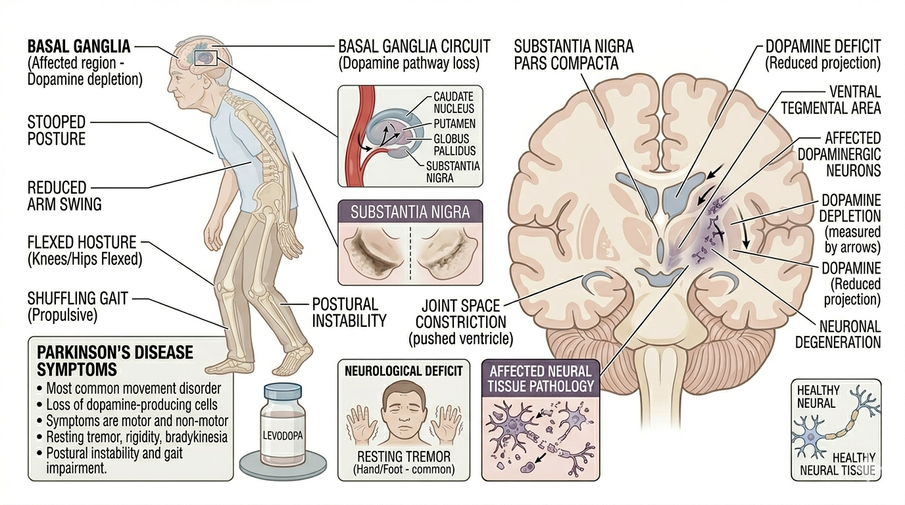

Parkinson’s Disease Assessment
Parkinson’s Disease

Quick Definitions
Parkinson’s Disease: A progressive neurodegenerative disorder characterized by tremor, rigidity, and bradykinesia.
Patient Profile
Elderly patients, progressive neurological disorder
Subjective Assessment
- Tremors at rest
- Slowness of movement (bradykinesia)
- Stiffness
- Difficulty in walking
- Balance problems
Objective Assessment
- Observation (stooped posture)
- Resting tremor
- Rigidity (lead-pipe / cogwheel)
- Bradykinesia
- Gait analysis (shuffling gait)
- Balance assessment
Step-wise Clinical Assessment
- History taking
- Observe posture
- Check tremors
- Assess rigidity
- Check bradykinesia
- Gait assessment
- Balance assessment
- Clinical reasoning
Clinical Reasoning
Resting tremor → Parkinson’s
Bradykinesia → movement disorder
Rigidity → basal ganglia involvement
Clinical Decision Flow
Movement problem → Check tremor
↓
Resting tremor → Parkinson’s likely
↓
Check rigidity + gait
↓
Shuffling gait → confirm diagnosis
Differential Diagnosis
- Parkinson’s Disease
- Essential tremor
- Stroke
Red Flags 🚨
- Rapid progression of symptoms
- Frequent falls
- Severe rigidity affecting function
- Cognitive decline
Viva Questions
- What are cardinal signs of Parkinson’s?
- What is bradykinesia?
- Types of rigidity?
Key Points 📌
- Resting tremor is key feature
- Bradykinesia is essential for diagnosis
- Shuffling gait is characteristic
Common Mistakes ⚠️
- Ignoring gait assessment
- Confusing with stroke
Comparison 🔍
| Condition |
Main Feature |
| Stroke |
One-sided weakness (hemiplegia) |
| Parkinson’s |
Tremor + bradykinesia |
Case Example 🧾
65-year-old patient presented with resting tremor,
slow movements, and difficulty in walking. Examination revealed
bradykinesia and shuffling gait,
suggesting Parkinson’s disease.
Clinical Pearls 💡
- Resting tremor reduces during movement
- Bradykinesia is essential for diagnosis
- Shuffling gait is characteristic feature
Quick Revision ⚡
Tremor → Resting
Bradykinesia → Slow movement
Rigidity → Cogwheel / Lead pipe
Shuffling gait → Classic sign
References 📚
- O'Sullivan – Physical Rehabilitation
- Umphred – Neurological Rehabilitation
- UPDRS Scale – Parkinson’s Assessment
- Kisner & Colby – Therapeutic Exercise
⬅ Back to Home